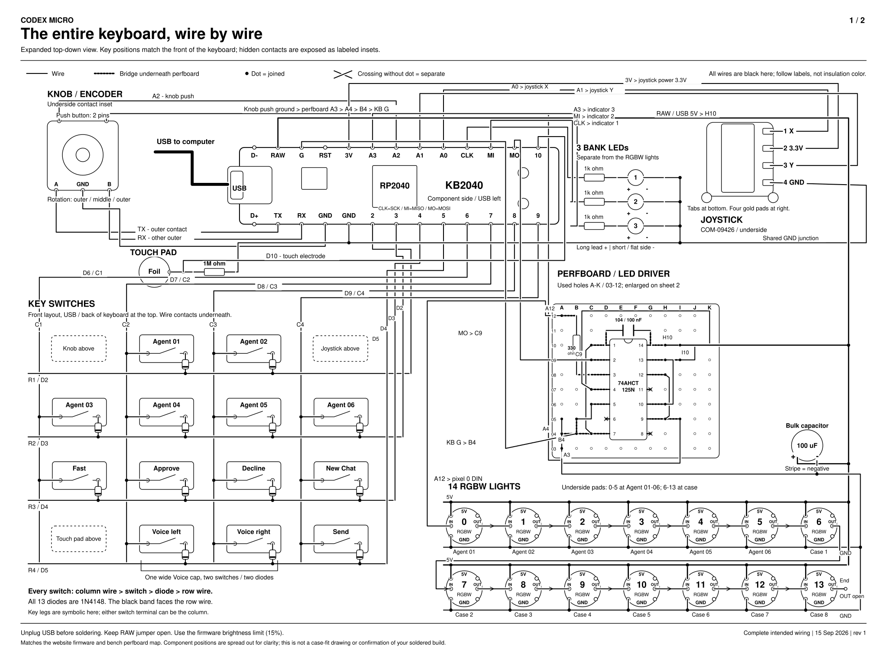
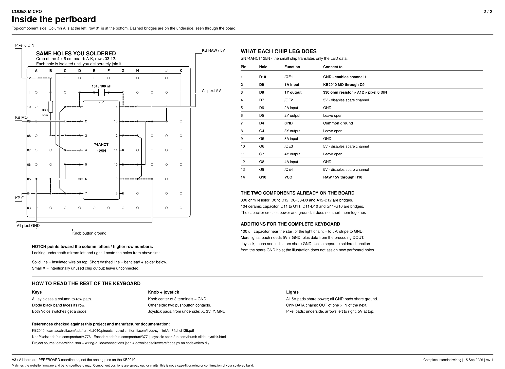

1. Complete wiring

Zoom in, then scroll sideways and down. A black dot means wires join. Crossings without dots stay separate.
This is the complete intended circuit. Parts are spread apart so you can trace the wires. The key positions match the keyboard's front; the knob, joystick and light solder pads are explicitly shown from underneath. This is not a claim that all of these connections are already built or tested.
2. Your perfboard, enlarged

A3 and A4 here mean holes on the perfboard. They are not KB2040 analog pin names.